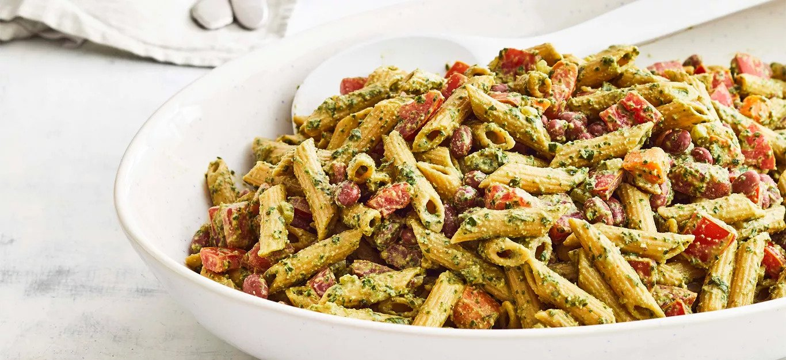

Ingredients
- 1 pound pasta
- 1/2 cup basil pesto
- 1/2 cup grated Parmesan cheese
- 1/4 cup pine nuts
- 2 cloves garlic, minced
- 1/4 cup olive oil
- Salt and pepper to taste
Cooking Instructions
- Cook the pasta according to package instructions, then drain and set aside.
- In a pan over medium heat, toast the pine nuts until golden brown, stirring frequently.
- In a separate pan, heat the olive oil over medium heat. Add the garlic and cook until fragrant, about 1 minute.
- Add the cooked pasta to the garlic and olive oil, then add the basil pesto and Parmesan cheese. Toss everything together until the pasta is well coated.
- Serve the pasta with the toasted pine nuts on top, and season with salt and pepper to taste.
Photo
